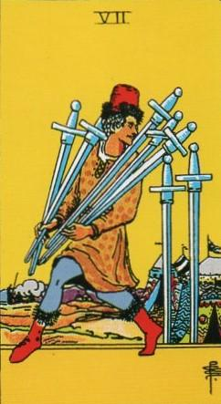
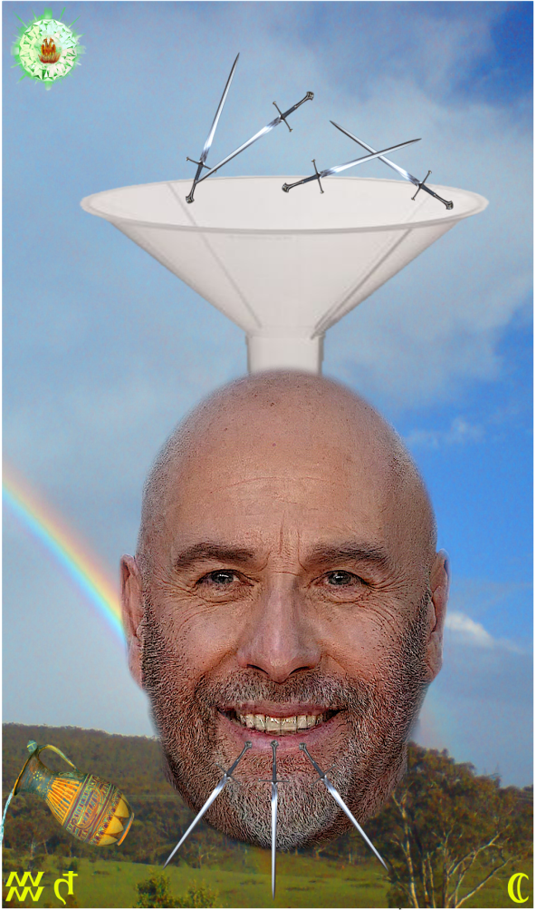
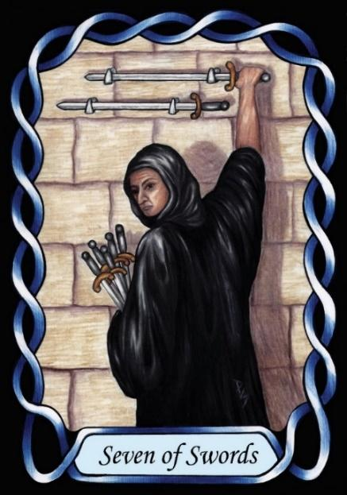

Seven of Swords



Sign |
|
Eleven: Friends |
|
Sign Ruler |
|
Element |
Air: interaction |
Modality |
|
Symbol |
Water Carrier |
Decan |
|
Decan Ruler |
|
Time |
Feb 9 - 18 |
Mimic Aquarius III
A Master of friends and interaction, ruled by Saturn and the Moon, is excellent at learning from people. He has an open mind, as he continually soaks up knowledge from all around him, but he also has Saturn’s imperiousness. His knowledge comes not from formal study or experience, but from other people through osmosis and to some extent by theft. That knowledge can be superficial, but will still be used to present a Saturnian image of omniscience. A true expert may easily find cracks in the façade he presents.
Goldschneider Personology
The principle here is acceptance. Some born under this influence will be good at it, while others will struggle with it, as in all things astrological. They are naturally idealistic, but with a strong rational streak that keeps them grounded.
RWS Imagery
An Aquarius-three takes ideas from others, and will later present them as his own, using them to inflate his image.